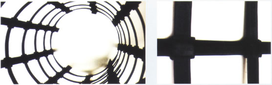

服务热线：0510-87597688

咨询热线
0510-87597688拉力大 ——每延米纵横向拉伸屈服力能达到20-150KN，经交通、铁道、水利三部产品质量监督检验中心检测。
变形小 ——凸结点钢塑土工格栅的屈服伸长率≤3%；凸结点塑料土工格栅的屈服伸长率≤10%。
结点强度高 ——本品采用熔铸凸结点式连接纵横筋带构成格栅，其结点强度高，焊接格栅结点抗剪强度≥1.5MPa，凸结点格珊结点极限剥离力≥300N。
寿命长 ——塑料是保护高强钢丝的材料，也是塑料格栅受力材料，它具有耐酸、碱、盐腐蚀的化学特性，经科学配方具有抗老化、抗氧化的性能。适用于各类永久性工程，使用寿命可达百年以上。
效果好 ——格栅网状熔铸凸结点结构，增强格栅与岩土的嵌锁咬合作用，能约束土体的侧向位移，增强地基承载力，减少土体的整体沉降和改善土体的不均匀沉降，增强基础的整体性能，且能防止面层开裂。
造价省 ——通过若干工程实例证明，用这种材料构筑的加筋土工程与传统方式构筑的同类工程相比，可节省造价10%-50%。
施工便捷 ——格栅的铺设、定位极其简单、容易平整。幅宽2m-4m，接头少，可穿锁连接，施工期短。

凸结点双向钢塑土工格栅测试指标
| 标称TGG | 30-30 | 40-40 | 50-50 | 60-60 | 80-80 | 100-100 | 120-120 | 150-150 |
| 每延米纵向拉伸屈服力（KN/m) 纵向 | ≥30 | ≥40 | ≥50 | ≥60 | ≥80 | ≥100 | ≥120 | ≥150 |
| 每延米纵向拉伸屈服力（KN/m) 横向 | ≥30 | ≥40 | ≥50 | ≥60 | ≥80 | ≥100 | ≥120 | ≥150 |
| 纵/横向屈服伸长率（%） | ≤3 | |||||||
| 结点极限剥离力（N） | ≥300 | |||||||